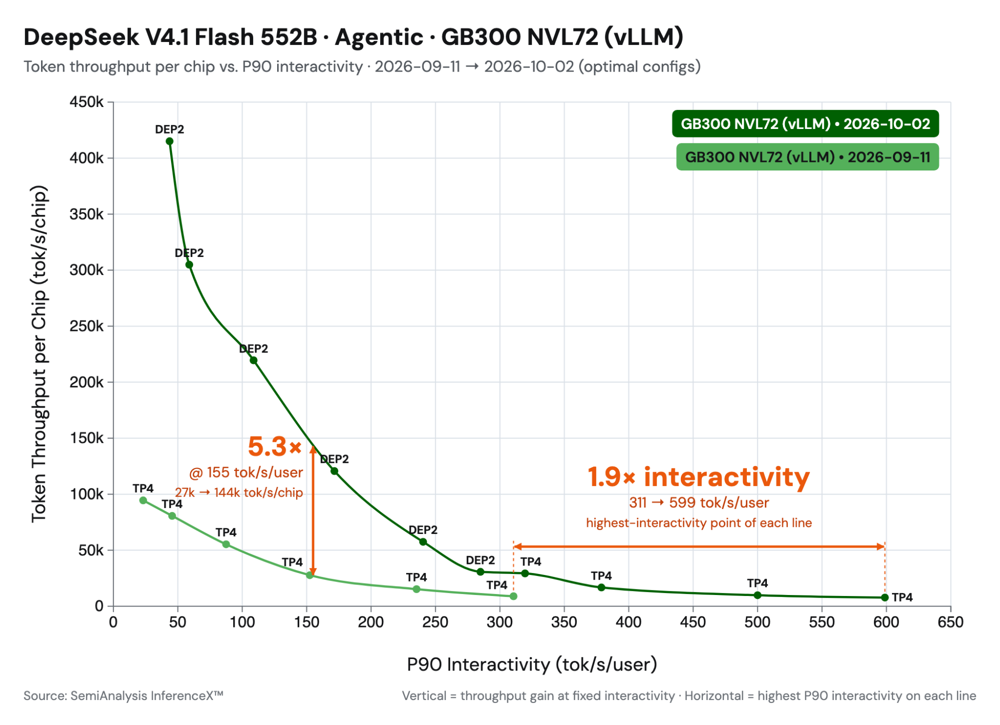
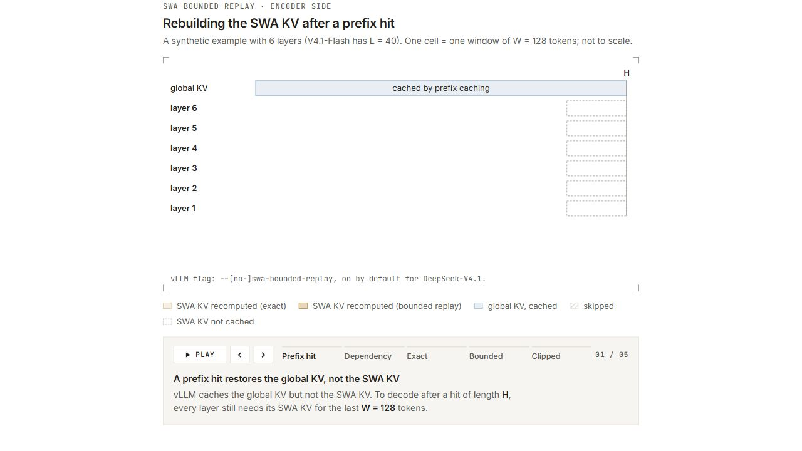
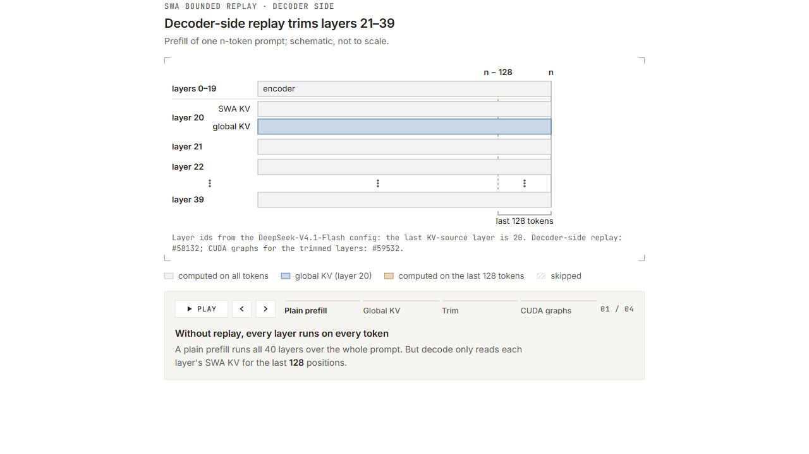
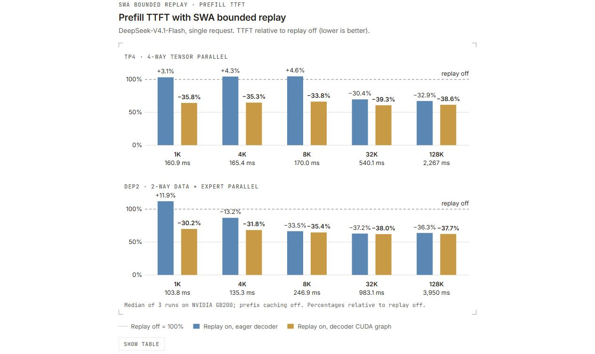
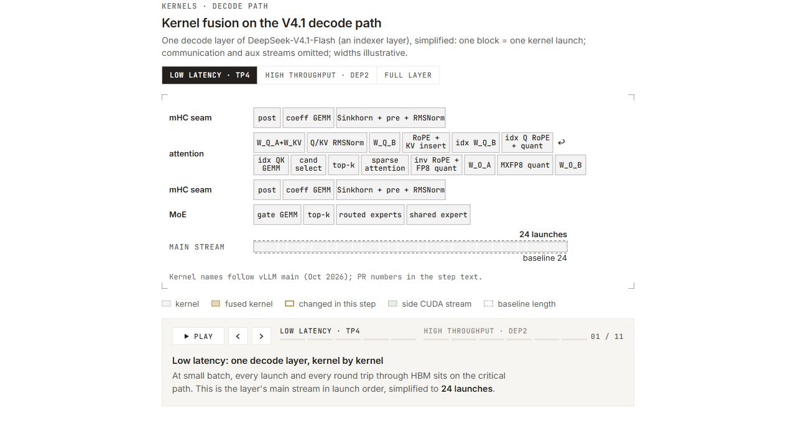

图 1：从模型首日发布到 10 月 2 日，vLLM 在 SemiAnalysis AgentX 上的结果（数据来源）。
要点速览： DeepSeek-V4.1-Flash 发布后的三周内，Inferact 与 vLLM 社区持续优化该模型，在低并发场景实现 1.9 倍加速，并在 150 TPS 约束下将吞吐量提高 5.3 倍。性能提升主要来自：
- 实现结合 CUDA Graph 的 SWA 有界重放，使首 token 时间（TTFT）降低约 30%。
- 集成 DeepSeek 新发布的内核，包括 MegaAttention、Mega-mHC、Mega-Gate 和 DeepSelect。
- 积极融合并行化其余内核，包括使用侧 CUDA 流执行 mHC，并把 all-reduce 与前后操作融合为单个内核。
DeepSeek V4.1 为长周期智能体服务任务引入了高效架构。凭借因果编码器—解码器（CED）架构，模型在解码时每个 token 激活 160 亿参数，而预填充时只激活 80 亿参数。它的内存效率也很高：通过压缩稀疏注意力 2（CSA2）、FP4 KV 缓存和跨层 KV 缓存共享等技术，将全局 KV 占用压缩到每 token 890 字节。
本文介绍如何将 DeepSeek 的模型级优化与 vLLM 的系统级优化结合，在 SemiAnalysis AgentX 智能体服务基准上实现 5 倍吞吐量提升。优化分为两类：SWA 有界重放和内核相关优化。
SWA 有界重放
DeepSeek-V4.1-Flash 保留两类 KV 缓存。全局 KV 经过压缩、跨层共享，并以 FP4 格式存储，每个 token 约占 890 字节（参见 V4.1 技术报告）。滑动窗口（SWA）KV 未压缩，使用 FP8 格式，覆盖 40 个层中各层最近的 128 个位置。
SWA KV 带来两项成本：
- 前缀缓存必须在每个可能命中的边界保存 SWA KV，其存储成本超过全局 KV 的 10 倍。
- 预填充必须在提示词的每个 token 上运行第 21～39 层，尽管解码只会读取这些层最近的 128 个位置。
一种直接的办法是不缓存 SWA KV，而是在需要时重新计算。然而，精确重算成本很高，因为每层的 128-token 窗口依赖下层更早的位置；跨越 L 层重建时，大约需要重放 L × 128 个 token。
DeepSeek V4.1 引入 SWA 有界重放，以少量精确度换取效率。它只重新运行最后 128 个 token，并在重放起点截断 SWA 窗口。结果并非逐位完全一致，但 DeepSeek 报告的质量损失可以忽略。vLLM 在两个位置应用该技术，分别解决上述两项成本。
当前阅读器不支持 iframe 时，展开静态预览

图 2：精确重建会在每层多级联一个窗口。有界重放只重新计算最后一个窗口，并在重放起点 s 截断。
编码器侧：缓存命中时重建窗口
采用编码器侧重放时，vLLM 只缓存全局 KV，跳过 SWA KV。如果前缀命中长度为 H，系统会重新运行 token 区间 [H − 128, H) 来重建 SWA KV，并在 s = H − 128 处截断窗口。
解码器侧：跳过大部分提示词预填充
在 DeepSeek V4.1 的 CED 架构中，第 20 层计算解码器全局 KV，第 21～39 层复用它。因此，vLLM 在每个 token 上运行第 20 层以生成全局 KV，而第 21～39 层只处理每个请求最后的 128 个 token。对于长提示词，这相当于跳过近一半模型计算。
当前阅读器不支持 iframe 时，展开静态预览

图 3：解码器只有第 20 层的全局 KV 需要覆盖所有 token；第 21～39 层只运行最后 128 个 token。
为裁剪后的层使用 CUDA Graph
裁剪后，第 21～39 层的 GPU 工作量很小。如果采用 eager 模式运行，内核启动开销会占主导，GPU 大量空闲。这些层的输入形状还与第 0～20 层不同，因此两部分无法捕获到同一张 CUDA Graph 中。
vLLM 可拆分的 PIECEWISE Graph 本来就会在模型中部断开，因此形成自然的切分点：第 0～20 层在完整批次上捕获，第 21～39 层在裁剪后的批次上单独捕获。这样既能为裁剪后的预填充使用 CUDA Graph，也能让第 21～39 层采用自己的捕获尺寸，提高图覆盖率。
DeepSeek-V4.1 默认启用 SWA 有界重放，可通过 --[no-]swa-bounded-replay 控制。
准确率与性能结果
虽然 SWA 有界重放并不精确，但 DeepSeek 报告的质量损失可以忽略。我们在 vLLM 中使用 GSM8K、GPQA 等基准进行了验证，没有观察到有意义的准确率差异，差距约在 1.5 个标准误以内。
性能方面，编码器侧会在每次命中时用一个窗口的预填充计算换取缓存空间，因此主要加速来自解码器侧。我们在三种设置下测量单请求预填充 TTFT：关闭重放；开启重放但不为解码器使用 CUDA Graph（第 21～39 层采用 eager 模式，只有 eager 步骤会被裁剪）；同时开启重放和解码器 CUDA Graph。
当前阅读器不支持 iframe 时，展开静态预览

图 4：关闭或开启 SWA 有界重放，并分别禁用或启用解码器 CUDA Graph 时，DeepSeek-V4.1-Flash 的单请求预填充 TTFT。数据为 NVIDIA GB200 上 3 次运行的中位数，关闭前缀缓存；百分比以关闭重放为基准，越低越好。
结合 CUDA Graph 的解码器重放可将预填充计算时间缩短 30%～40%。 CUDA Graph 对短提示词尤为重要，因为此时内核启动是瓶颈。如果没有 CUDA Graph，启动开销会超过节省的 GPU 计算，重放甚至比基线更慢（DEP2、1K 提示词时最高慢 12%）。对于长提示词，GPU 工作量足以隐藏启动开销，因此 eager 重放已经获得大部分收益，CUDA Graph 再带来几个百分点的提升。
内核优化
DeepSeek 在发布 DeepSeek-V4.1-Flash 时，也在三个仓库中发布了新内核。DeepSelect 是用于 DeepSeek 稀疏注意力的新 top-k 库；DeepGEMM 新增稀疏索引器内核和多个 GEMM 融合内核；FlashMLA 新增 NVFP4 KV 缓存支持及融合注意力内核 MegaAttention。我们已将其中多项开源内核集成到 vLLM，进度记录在 #57448。
当前阅读器不支持 iframe 时，展开静态预览

图 5：DeepSeek-V4.1 单层前向传播。金色边框表示内核融合，并标注对应的 vLLM PR。交互图可以逐步查看低延迟和高吞吐路径，也可以选择完整层。
Mega-mHC（#56962）。 Mega-mHC 把 mHC 链融合为一个内核，包括 post 步骤、延迟 pre 步骤和 RMSNorm。它替代现有的 TileLang 融合路径；DeepGEMM 的实现目前性能更好。在 NVIDIA GB200 上，该内核比 TileLang 版本快 1.14～1.51 倍。
Mega-Gate（#56266）。 Mega-Gate 将 MoE 路由器中的 gate GEMM、专家打分、偏置和 top-k 选择融合为一个内核。此前这些操作由一个 GEMM 和单独的 top-k 内核运行，额外产生一次内核启动和分数数据的内存往返。融合后，中等批量下内核速度提高 1.18～1.31 倍。
mHC 多流重叠（#57603）。 V4.1 的 mHC 系数向后错开一个子层，因此下一接缝的系数 GEMM 只读取在注意力或 FFN 开始前就已存在的残差流；在下一次 post/pre 合并前，两侧都不需要对方的输出。小批量下，vLLM 现在使用侧 CUDA 流计算下一个 mHC 块的系数，与注意力和 FFN 并行运行，从延迟敏感解码的关键路径中隐藏这部分工作。在 TP4 低延迟场景中，延迟降低约 4%。
稀疏 MQA logits（#56254）。 V4.1 后面的索引器层从固定的 16K 候选位置中选择 top-k。旧实现先对完整上下文计算分数，再屏蔽非候选分块。DeepGEMM 的稀疏内核只对候选项打分，因此成本不再随上下文长度增长。在 NVIDIA GB300 上，单层在 8K token 时快 1.2 倍，在 512K 时快 14～23 倍；4 张 GB300 的端到端解码提高 3%～6%，预填充在 512K 时快 1.43 倍，在 1M 上下文时快 2 倍。
采用 NVFP4 压缩 KV 的 MegaAttention（#56935）。 FlashMLA 的 MegaAttention 内核在一次启动中完成查询 RoPE、稀疏注意力、输出逆 RoPE 和 FP8 转换，并直接写入输出投影要读取的缓冲区，从而去掉注意力与下一层之间的独立内核和内存往返。它还读取新的 NVFP4 压缩 KV 格式，比原来的 FP8 KV 缓存小 45%。通过激进融合消除操作间的 HBM 写入，MegaAttention 的内核效率提高 1.45 倍。
低延迟融合 WO-A 内核（#58634）。 针对 Blackwell 上的小解码批次，我们将逆 RoPE、FP8 量化、WO-A 批量 GEMM 和 MXFP8 再量化融合为一个 CuTe-DSL 内核，把 WO-B 之前的链从三个内核缩减为一个。中间激活保留在片上，并让数据移动与计算形成流水线，避免小批量下占主导的额外启动与全局内存往返。融合 WO-A 路径最高加速约 2.1 倍，低并发下 token 间延迟最多降低约 6%～7%。
Engram。 V4.1 的 Engram 层根据 token n-gram 哈希，从两个大型 FP8 表中查找行。每步只读取少量行，因此表的放置和查找延迟比计算量更重要。我们异步预取卸载到 CPU 的 Engram 查找，使主机内存访问与解码器计算重叠，加速小批量解码（#56512）。Engram 头采用统一 TP/DP 方案分片，同机 DP 副本共享主机表，避免冗余副本以及查找路径上的 DP 通信（#57651）。对于这些驻留主机的大表，我们还支持透明大页（THP），降低缺页开销，使预填充查找内核最高加速 10 倍（#56926），并针对大页不足的情况加入额外优化（#59327）。
智能体性能
我们使用 SemiAnalysis AgentX 基准代表智能体服务工作负载，详情参见此前文章。上述优化使 vLLM 相比首日实现获得显著提升：低延迟结果提高 1.9 倍，高吞吐结果提高约 5 倍。
图 6：从模型首日发布到 10 月 2 日，vLLM 在 SemiAnalysis AgentX 上的结果（数据来源）。
低延迟服务采用 TP4 和 FlashInfer 注意力。小批量解码主要受内存带宽限制，因此把模型权重分散到 4 张 GPU 很合适。我们也测试了 MegaAttention，但它的主要优势出现在融合空间更大的高吞吐场景；TP4 下收益较小，测试中 FlashInfer 更快。
高吞吐场景切换到 DEP2，使用 DP 注意力并把专家分布到各 GPU。V4.1 在所有头之间共享 KV latent，使用 TP 会在 GPU 间复制 KV 缓存。DP 避免了这种复制：每张 GPU 只保存自己服务请求的 KV，并通过会话亲和性在多轮对话间维持前缀缓存局部性。MegaAttention 的 NVFP4 进一步降低每请求 KV 占用，与 FP8 相比接近减半，从而提高单 GPU 并发量。
V4.1 的内存效率很高，在整个基准中都不需要 KV 缓存卸载。预计在更高并发并采用预填充/解码分离时，KV 缓存卸载会开始带来收益。
SWA 有界重放与预填充侧内核优化也大幅改善了 TTFT。

图 7：优化后的 TTFT—吞吐量权衡（数据来源）。
在总吞吐量约 100K 时，三项优化合计让 TTFT 降低近 70%：
- SWA 有界重放让模型上半部分只处理最后 128 个 token，预填充计算量大致减半。
- CUDA Graph 让裁剪后的小规模重放在 GPU 上高效运行，避免受 CPU 内核启动限制，从而兑现完整加速收益。
- 内核改进进一步加速模型计算。
致谢
感谢 DeepSeek 开源 DeepSeek-V4.1-Flash 及相关内核，感谢 Inferact 团队完成初始模型适配和优化，感谢 NVIDIA 的协作与支持，以及 SemiAnalysis 提供 AgentX 基准。